Как так получилось, что в попытках обуздать сложность мы порождаем ещё большую сложность. Вопрос, конечно, очень сложный. Возможно, такова природа человека и по-другому быть не может. Человек всегда был заложником того, что он изобретал для облегчений своих страданий. Простой пример – наш телефон, который теперь больше наш хозяин чем мы его. Но вопрос не “кто виноват?”, вопрос – “что делать?”
«Вадим, вот ты говоришь, фреймворки сложные, и работают только по одиночке, как тогда получать удовольствие от работы если я не смогу пользоваться ими при создании микро-фронтендов?».
Давайте разбираться вместе.
Вам нужен только js. Сейчас объясню. Я недавно посмотрел доклад одного разработчика с react berlin, случайно увидел в рекомендациях на youtube. И знаете, очень крутая мысль у него, если ты не знаешь как что-то работает, из-за сложных абстракций или синтаксиса, но знаешь результат и как это использовать, попробуй переизобрести это. Разработчик который писал этот инструмент также имел в распоряжении только js. Поэтому давайте изобретем микро-фронтенды вместе с нуля. Конечно же, сейчас я говорю больше с технической стороны, о том как можно организовать сборку микро-фронтендов в одно приложение и чтобы оно не развалилось. Но аспектов, связанных с организацией команд и вообще пересмотра привычных процессов мы тоже коснемся.
.................Давайте начнем. Чтобы я хотел видеть в микро-фронтендах с точки зрения разработчика и технической реализации?
Начнем с первого пункта. Все примеры будут для придуманного приложения-каталога, мы смотрим галерею, выбираем некоторый магазин, можем перейти в этот магазин и накидать товаров в корзину. Таким образом, мы хотим, чтобы у нас было три микро-фронтенда. Собственно для общей галереи магазинов, для отдельного магазина и для корзины с товарами.
Что из того что мы уже знаем, что нам сейчас понадобиться? Две вещи. Наши микро-фронтенды, в конечном итоге, это два скрипта js и css. Второй момент, мы должны сказать нашему хост приложению где взять эти скрипты и куда их положить, чтобы магия произошла. Поэтому, нам необходимо завести некоторый manifest.json, который будет содержать информацию о каждом отдельном микро-фронтенде. Я предполагаю, что минимальное описание должно выглядеть так.
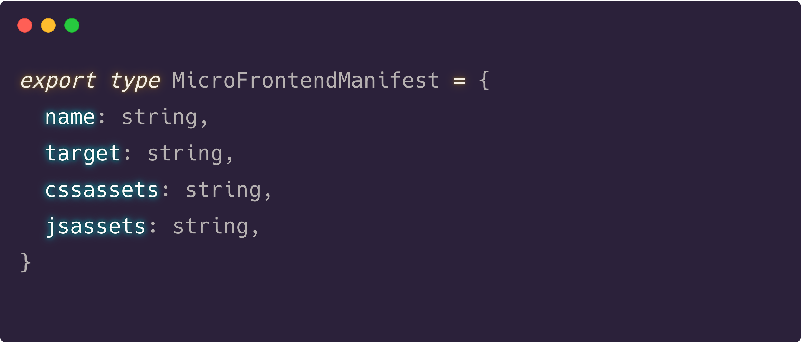Нам достаточно имени, таргета в хост приложении, где мы собираемся монтировать микро-фронтенд, и пару урлов, откуда мы собираемся стянуть скрипты.
Далее мы можем настроить нечто следующее:
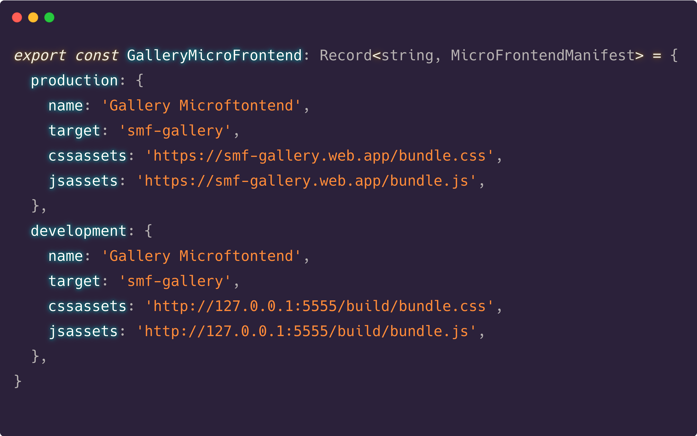Мы можем описать наши микро-фронтенды для нескольких сред, поскольку когда мы будем дебажить наше хост приложение, или просто прогонять тесты на CI нам могут быть не нужны скрипты с продакшена.
После этого, мы можем создать мапу для всех микро-фронтендов и положить ее где-нибудь на конфиг-сервере. Далее к ней будут иметь доступ все команды, которые могут независимо настраивать свои отдельные микро-фронтенды.
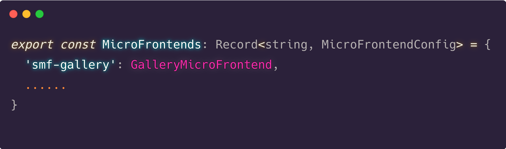Теперь, когда мы знаем всю информацию о местоположении микро-фронтенда, что нам нужно чтобы он заработал на странице?
Во-первых, мы должны убедиться, что сам микро-фронтенд осознает себя.
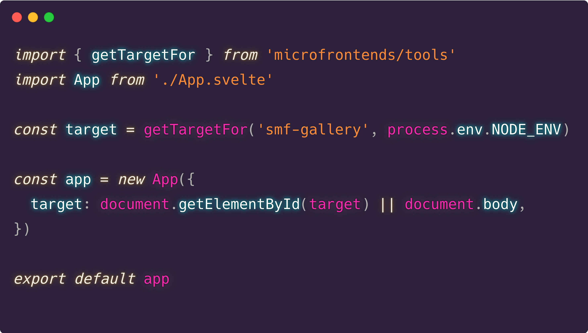Мы говорим, проверь текущий environment и возьми таргет для нашего микро-фронтенда. Потом мы его находим и передаем в приложение. Заметьте, мы также оставили fallback для body, когда заявленного таргета нет на странице, так-как нам помимо общей интеграции нужно разрабатывать микро-фронтенд независимо от остальных. И, если мы не находим таргет - это значит, что сейчас мы в локальном режиме.
Во-вторых, нам нужно убедиться, что в хост приложении есть место, в которое собирается встроиться микро-фронтенд.
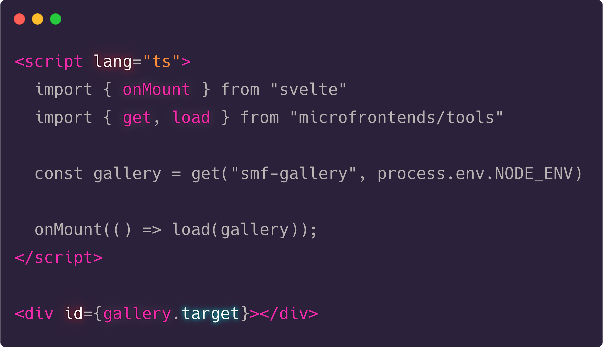Теперь когда обе стороны знают друг о друге, давайте посмотрим, что делает функция load.
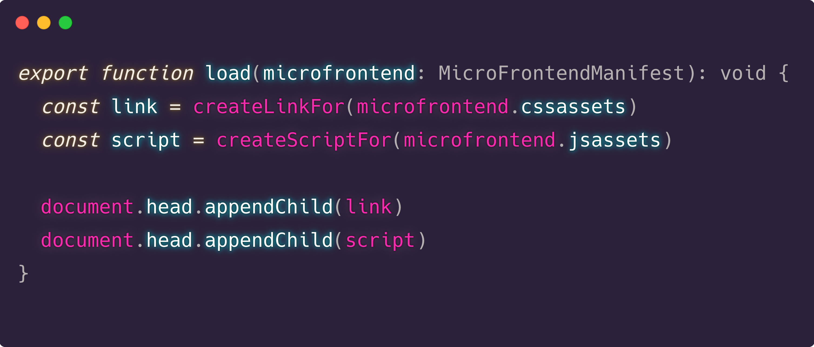Вот и все, единственное, что еще может понадобиться – это проверить, что не добавили ли мы раньше наши скрипты и просто удалить их перед добавлением новых.
Какие бенефиты мы можем получить используя такой подход? Я вижу три:
Перейдем к следующему вопросу. Как нам настроить коммуникации среди микро-фронтендов? Какие опции мы знаем?
Но у этих двух подходов есть проблемы. События уж очень требуют внимания. Они асинхронные и могут быть раскиданы по самым неожиданным местам. Это делает их крайне сложными в тестировании.
Что с бродкастом? Когда я говорил, что если у нас есть только js, то мы уже all set, я лукавил. Сейчас очень трудно представить разработку на js без какого-нибудь типизирующего инструмента. Собственно свелт поэтому и обзавелся поддержкой ts. И, поскольку бродкаст ченел – это все-таки нативная реализация, вы столкнетесь с некоторыми трудностями при типизации ваших данных, поскольку чтобы вы не передали в postMessage, это станет any. Поэтому я решил написать свой велосипед.
В чем идея? Оставить подход как у бродкаст ченел с общей шиной сообщений, но типизировать события, которые могут передаваться по этой шине. То есть, если мы знаем, что микро-фронтенд Галерея должен общаться с хост приложением, то мы сами создаем все необходимые события для этого взаимодействия.
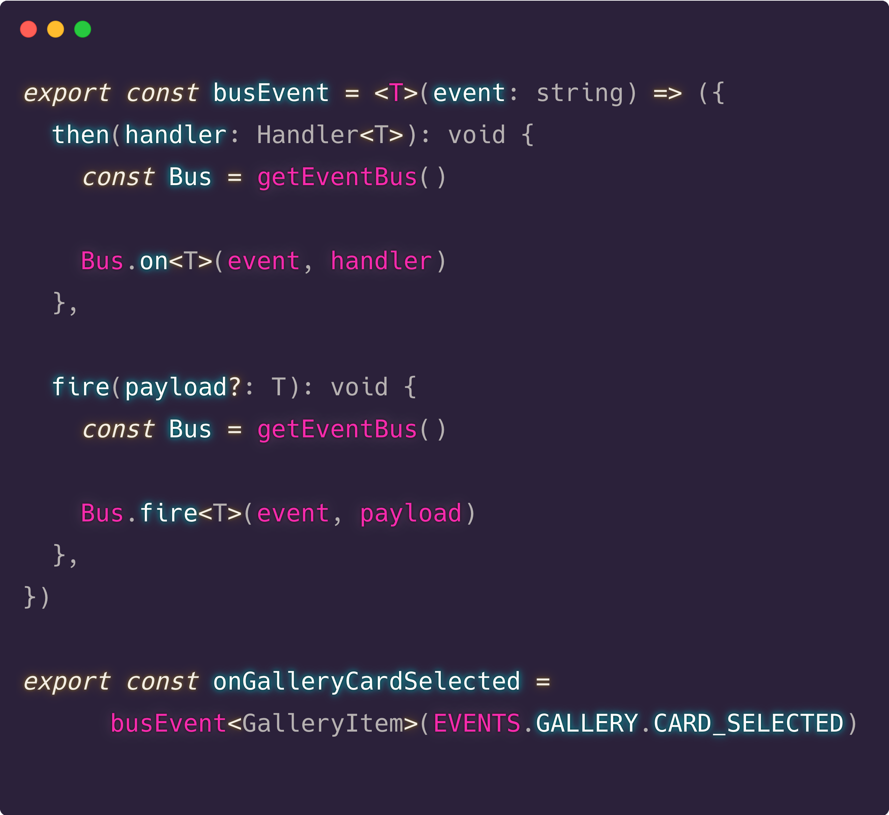 ................. 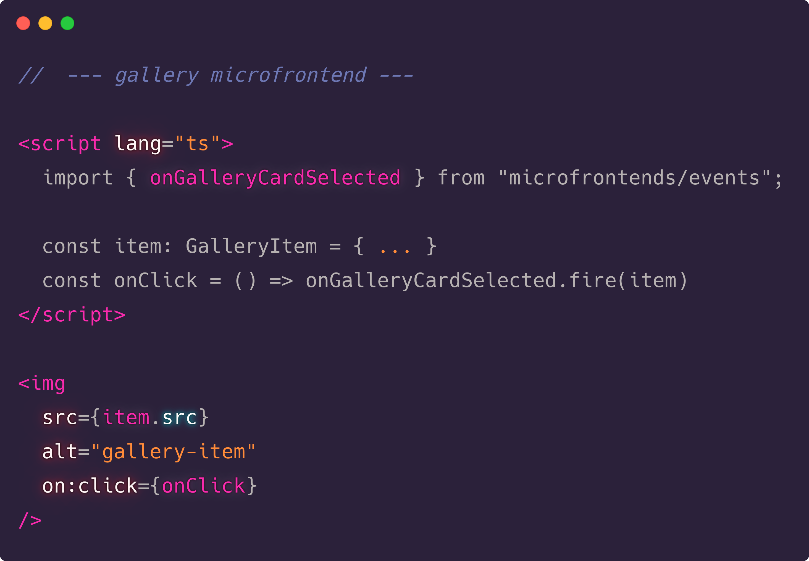 ................. 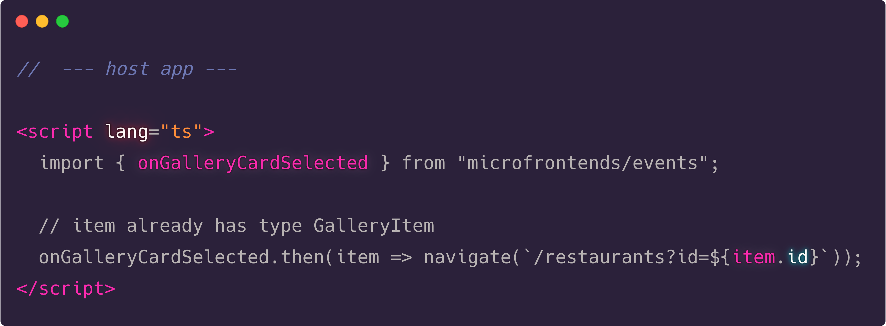Далее нам нужно посмотреть как выглядит сама шина сообщений.
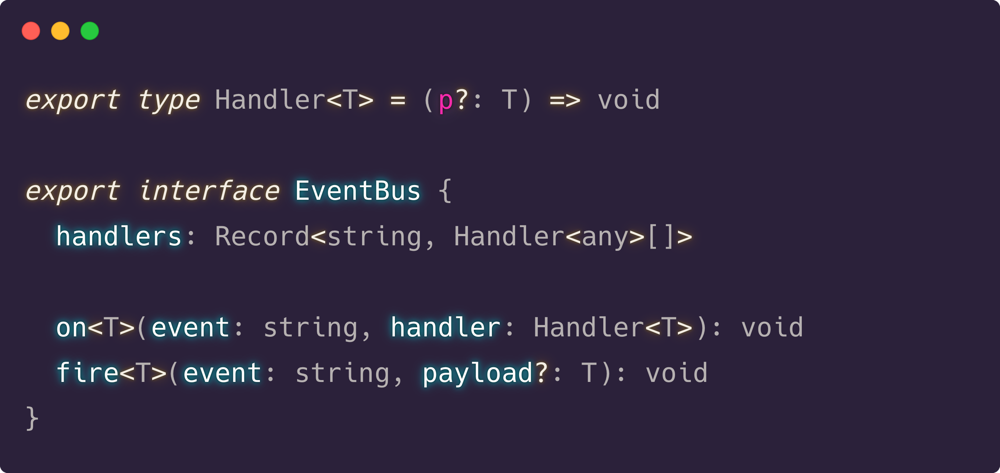И ее реализация:
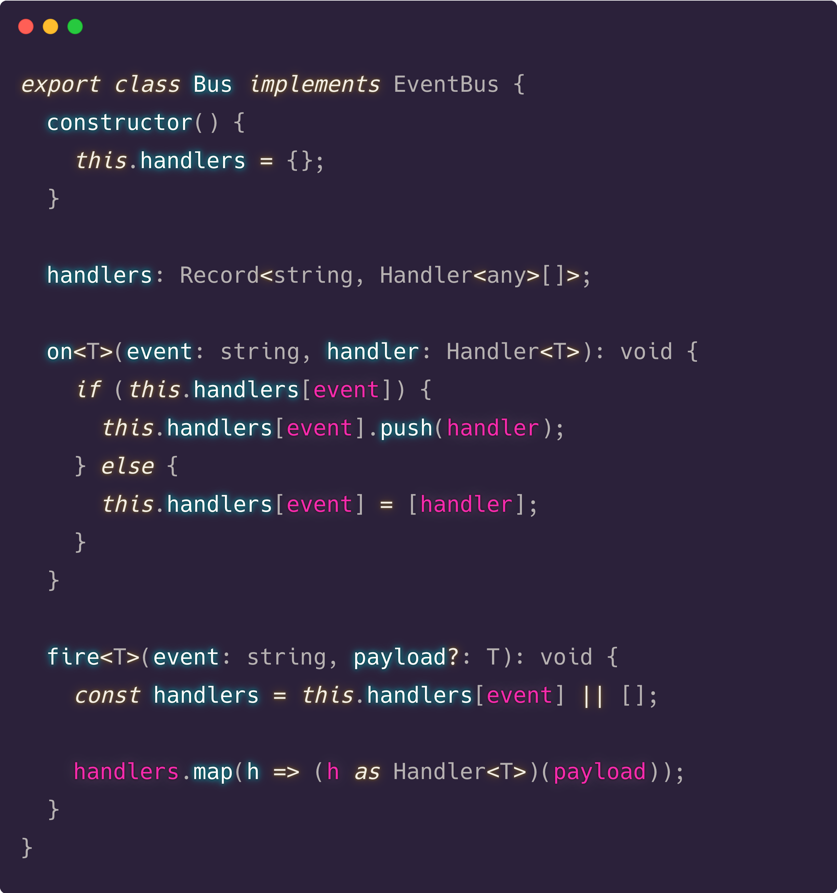То есть самая базовая реализация pub/sub паттерна. А для того чтобы сделать процесс подключения к этой шине более лаконичным, заведем также несколько хелперов.
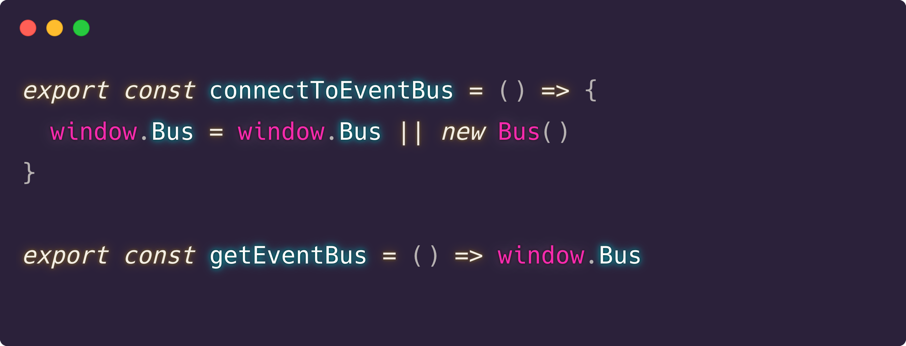Какие бенефиты я вижу в этом подходе:
В общем-то, в остальном тестирование микро-фронтендов ничем не отличается от обычных приложений. Но есть один момент относительно интеграционного тестирования и тестов. Они не нужны. Но, наверно, вы уже догадались сами почему. Это межкомандные взаимодействия, что, мы уже знаем, не работает с микро-фронтендами. А также, даже если кто-то сам напишет эти тесты, кто их будет поддерживать в актуальном состоянии – большая загадка. Лучше использовать что-то вроде Consumer-Driven-Contracts, когда каждый микро-фронтенд описывается как перечень того, что ему необходимо для корректной работы, а не в виде тестов в реальной среде. Это тема для отдельного доклада, а с выдержкой можно познакомится на martinfowler.
.................Следующий вопрос, который мы рассмотрим – независимый деплой. На самом деле, это, пожалуй, самый легкий вопрос, поскольку существует огромное кол-во площадок, где можно просто положить свои скрипты. Тот же гитхаб и github pages, или heroku. Я выбрал firebase, у них даже есть такая опция – хостинг с небольшой аналитикой из коробки. Все, что нам нужно, установить firebase tools, вызвать в терминале firebase init и проследовать инструкциям.
И это все. Несколько незамысловатых действий и мы получаем наш фреймворк для микро-фронтендов. Осталось только убедить своего пиэма, что вам нужно все поменять в вашей компании. Потому что надо быть первыми, ну надо! Оставлю ссылочку на исходники и работающие микро-фронтенды.
Итак, о чем это я тут рассказвал в трех частях
Можно использовать несложные фреймворки – например преакт. Но у него нет своего пути развития. Это роль преследования, что делает такие фреймворки как свелт более приоритетными. Модульная сущность микро-фронтендов, реактивность взаимодействия делает свелт практически идеальным кандидатом. Микро-фронтенды – это про компилируемые фреймворки и про свелт в частности.
Что же, наш герой вынес замечательный урок. В погоне за прекрасным, подобно кружке Канемана, велик соблазн переоценивать то, что мы имеем и преуменьшать цену того что нам пытаются продать, но как сам Канеман и говорил - “Думай медленно”, позволь новой мысли просочиться сквозь тебя, и ты увидишь результат.
P.S. Если возникли вопросы к материалу или заметили ошибку, welcome to PR's. Или напишите мне в твиттер v_hadoocken